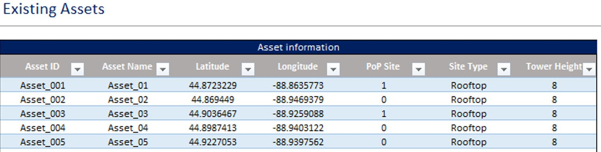
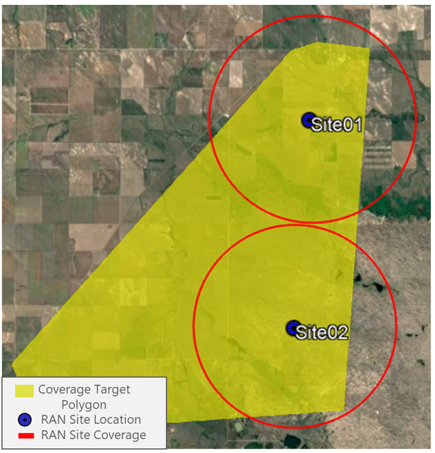
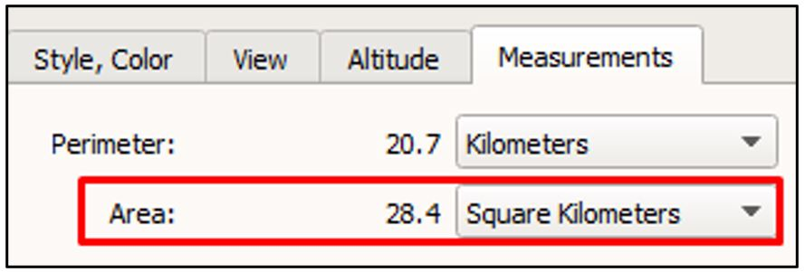

The network design
process is a set of tasks that you'll need to follow to develop your
preliminary network design. Figure 5.4 displays the process to perform the
network design process. This section will provide you with the necessary
instructions to go through the network design process.
Figure 5.4 — Network Design Process
The tools and files that you will be use through the network design
process are:
Before starting
the network design process, be sure you have these tools and files handy and
ready to be used. They are available as part of the Methods of Engagement
provided by this playbook.
Design Example
To demonstrate a practical exercise in
implementing the design process flow, each process step is performed for the following
scenario:
- Tribal Land Name:
Stockbridge Munsee Community
- Application: 12144395
- File Number:
0009056169
Figure 5.5 displays the
tribal land boundary as well as its application polygon.
Figure 5.5 — Design
example scenario
NOTE:
The data used in this example is for illustration purposes only. The actual
data will vary according to the implementation specifics.
5.2.1
Task 1. Identify Target Polygons
This task aims to clearly identify the target
polygons, which determine the specific area where your broadband services
will be offered. Moreover, it identifies the priority targets that are
specific locations required to be covered by the network coverage. This
information is the base for the rest of the design process.
Use the Tribal Mapping Tool to generate the target files
The output files from the Tribal Mapping
Tool that will be used during the design process are:
- Target File: This
is a .KML file. You can use this file to visualize the resulting priority
targets and polygons on the GIS Tool.
-
Demographic information File: Relevant information such as polygon area and population. This
information is exported in a .CSV file.
The details on how to use this tool can be
found in step 1.
Use the HLD Template to import the target file
To import the priority targets and polygons
into the HLD Template, follow
the instructions below:
1.
In the Dashboard sheet
from the HLD
Template, identify the Polygons Section,
as in Figure 5.6.
Figure 5.6 — Import Polygons function in
HLD Template.
2.
Click the Import File
Button and select the .CSV File generated by the Tribal Mapping Tool.
3.
Once the file has been
successfully imported, you can view the priority targets and polygons' data in
the Polygon sheet from the HLD Template.
 Design Example
Design Example
In this example, the target polygon
has been defined using the Tribal
Mapping Tool. The resulting polygon is
displayed in Figure 5.7. None specific
priority target is defined in this example.
Figure 5.8 — Target
polygon for the design example
Following the instructions
above, the geo-demographic data results were imported into the HLD Template as shown in Figure 9.

Figure 5.8 — Target
polygon data for the design example
5.2.2
Task 2. Identify existing assets feasible for
deployment
This task's objective is to accurately
identify the existing assets that can be used as part of the network.
The existing assets are the primary potential locations for the RAN sites and
the core site. They also specify the sites that already have connectivity to
the core site, which can be named as backhaul sites.
Use the Data Collection Kit to collect the existing assets
data
The Data Collection Kit is used to collect
and maintain a record of the existing assets that can be used as part of the
network design. The details on how to use this tool can be found in the tool's
user manual.
The outputs from the Data Collection Kit that
will be used on this task are:
- Existing Assets File: This is a .KML file. You can visualize the existing assets on the
GIS Tool.
Use the HLD Template to import the existing assets
data
Importing the existing assets into the HLD
supports in the identification of assets that can be part of the network
design. To import the existing assets into the HLD
Template, follow the instructions below:
1.
In the Dashboard sheet
from the HLD
Template, identify the Existing Assets Section,
as in Figure 5.9.
Figure 5.9 — Import existing assets
function in HLD Template.
2.
Click the Import File
Button and select the .CSV File containing the information of the existing
assets.
3.
Once the file has been
successfully imported, you can view the existing assets data in the Existing
Assets sheet from the HLD
Template.
Design Example
In this example, the existing
assets have been defined using the Data
Collection Kit. The resulting assets are
displayed in Figure 5.10.
Figure 5.10 — Existing assets available for
the design example
Furthermore, the existing
assets data was imported into the HLD
Template following the instructions. A partial view of the result is shown
in Figure 5.11.

Figure 5.11 — Extract of
the existing assets data for the design example
5.2.3
Task 3. Estimate number of RAN sites
The next task in the network design process
is to estimate the number of RAN sites required to cover the target
polygons. This number is primarily determined by the area of each of the target
polygons and expected number of subscribers.
Use the RAN Dimensioning Widget to estimate the
number of RAN sites
The RAN
Dimensioning Widget is a web-based tool used
to estimate the number of RAN sites required to cover the target polygons as
well as their associated equipment configuration. To calculate the number of
required RAN sites, follow the instructions below:
1.
In the widget main page, identify
the General Inputs Section. You'll need to introduce some of the data required based on
the outputs of previous steps in the Journey (see Figure 13). You will find instructions to
fill the rest of the inputs directly on the web version of the widget.
Figure 5.12 — General inputs section in
the RAN Dimensioning Widget.
2.
On the same main page,
identify the Polygon Inputs Section, as in Figure 5.13. Introduce
the number of target polygons to be examined and click the Insert Button.
After click the Insert Button, the polygon inputs boxes will appear. In these
boxes, you'll need to introduce the required data based on the results of the
Tribal Mapping Tool.
Figure 5.13 — Polygon inputs section in
the RAN Dimensioning Widget.
3.
(Optional Step — Only for Advanced Users)
For a more accurate estimation, you can customize
the Advanced Coverage and Capacity Inputs Section, as shown in Figure 15. You will find instructions to
customize the advanced inputs directly on the web version of the widget by
hovering over each input.
Figure 5.14 — Advanced inputs section in
the RAN Dimensioning Widget.
4.
Once the calculations have
been successfully concluded, you can view the Results Section of the web
page, as shown in Figure 5.15. The most relevant outputs from this widget that
will be used on further tasks are:
- Average Cell Radius: Determines the area that can be covered by each RAN site.
- Number of Sites: This
is the minimum number of RAN sites required to cover each target polygon.
Figure 5.15 — Results section in the RAN Dimensioning
Widget
Use the Tech Solution Matrix to customize the tech
specs (Optional — Only for Advanced Users)
The Tech
Solutions Matrix is a collection of network equipment specifications
specially selected to be used for Tribal Lands. The details on how to use this
tool can be found in the tool instructions section.
The outputs from the Tech
Solutions Matrix that will be used on this task are:
- Network Equipment Tech Specs: These are the technical specifications for the selected network
equipment. An advanced user can use these outputs to fully customize the RAN
Dimensioning Widget with a specific network equipment.
Design Example
In this example, the RAN Dimensioning Widget has
been used to calculate the minimum number of RAN sites required to cover the
target polygon in the design example, as shown in Figure 5.16.
Figure 5.16 — Polygon
inputs section filled for the design example
The Results section is displayed
in Figure 5.17, where you can see
that the average cell radius is 4.00km and 6 RAN sites are required to cover
the target polygon.

Figure 5.17 — Results
section for the design example
5.2.4
Task 4. Define RAN site locations and
configuration
After estimating the number of RAN sites
required to cover the target polygon, the next task is to define the location
for those sites. The following subsections describe the process to determine
the RAN site locations and their radio equipment configuration.
Use the GIS Tool to define the RAN sites' location
To determine the location of the required
RAN sites, follow the instructions below:
1.
For each of the target
polygons, identify the existing assets that can be used as RAN Sites, as
shown in Figure 5.18. An existing site must comply with certain conditions to
be used as a RAN site. The most important is that it must be a high structure
(e.g., tower or rooftop) from which most of the Tribal Land can be seen.
Figure 5.18 — Location of existing assets
on the GIS tool
2.
Create a circle considering
the location of existing towers as the circle center, as shown in Figure 5.19.
In Google Earth Pro, use the measuring tool to draw the circle (ruler icon on
toolbar, or Tools menu > Ruler). The radius of the circle must be set using
the Average Cell Radius from the RAN Dimensioning Widget in Task 3. These circles represent the area covered
by the RAN sites.

Figure 5.19 — Coverage of RAN sites
located in existing assets
3.
After evaluating all the existing assets, fill
the uncovered areas with circular shapes until the entire target polygon is
covered. Each new circle's center will be considered a potential site's
location for a new RAN Site. Figure 5.20 displays this process.
Figure 5.20 — Final coverage of target
polygon
- Try to minimize the number of Greenfield sites due to their high
cost of implementation.
- The greenfield site must be located in a high location (e.g., hill
or mountain) from which most of the Tribal Land can be seen.
- You need to validate that there exists a path to reach the
greenfield site location. It will be required to erect a tower and deploy the
RAN network equipment.
- The greenfield location must be suitable to deploy a RAN site. For
instance, avoid dense foliage locations and locations
against tribal land's regulations.
Use the HLD Template to record the RAN sites'
location and configuration
To fill the attributes related to the RAN
site location into the HLD Template,
follow the instructions below:
- In the HLD sheet from
the HLD
Template, identify the Site Information,
as in Figure 5.21.
Figure 5.21 — Site information section in
the HLD template
- For each RAN site location, fill each of the attributes
following the instructions below. The "Possible Values" field describes the
only valid data format to be introduced in the HLD Template. Any other type of
data might imply an unpredictable behavior of the template.
|
Parameter
|
Description
|
Units
|
Possible Values
|
|
Site ID
|
Unique code
that identifies each of the network sites. The recommended structure for this
field is:
ABC_XYZ; where ABC
are three letters that represent your tribal land and WXYZ is a consecutive
number.
|
|
Typically eight characters in ABC_XYZ format
|
|
Site Name
|
Descriptive
name of the network site. This name typically includes the location's name of
the network site.
|
|
Up to 32 alphanumeric characters
|
|
Latitude
|
Latitude of the
network site's location. This value must be expressed in decimal notation.
|
|
-90 to 90
|
|
Longitude
|
Longitude of
the network site's location. This value must be expressed in decimal
notation.
|
|
-180 to 180
|
|
Site Type
|
Type of
structure that serves to mount network equipment
|
|
[Rooftop, Existing Tower, New Tower]
|
|
Tower Height
|
Height from
ground to the top of the tower or pole
|
m
|
3 to 60
|
|
Site Leasing
|
Indicate if the
site is being leased from a third party
|
|
[Yes, No]
|
|
Power Supply
|
Type of power
supply
|
|
[PoE Switch, PoE Injector, PSU]
|
|
Total Power Load
|
Sum of the
power load considering all the equipment to be installed at the site
|
W
|
> 0
|
Table 5.2 — HLD attributes guidelines for network site's
locations
To fill the attributes related to radio
equipment configuration into the HLD
Template, follow the instructions below:
- In the Site
Configurations sheet from the HLD Template, identify the RAN Configuration, as in Figure 5.22. You can use
the default values or customize them based on specific radio equipment
specifications.
Figure 5.22 — RAN Configuration section
in the HLD template
- In the HLD sheet from the HLD Template, identify the RAN Solution,
as in Figure 24.
Figure 5.23 — RAN Configuration section
in the HLD template
- For each RAN site, fill each
of the attributes following the instructions below:
|
Parameter
|
Description
|
Units
|
Possible Values
|
|
RAN Antenna AGL
|
Height from
ground at which the RAN antennas are installed
|
m
|
3 to 60
|
|
RAN Configuration
|
RAN
Configuration, based on configurations established in "Site
Configurations" sheet.
|
|
RAN Config X
|
|
Frequency Band
|
Frequency band
for radio access at the site
|
GHz
|
[2.5, 3.5, 5.8]
|
Table 5.3 — HLD attributes guidelines for radio equipment
configuration
Design Example
In this example, the
methodology to define the RAN site locations was followed using Google Earth as
the GIS tool. Figure 5.24 displays
the resulting 6 RAN sites that cover the target polygon and their estimated
coverage area.
Figure 5.24 — RAN site
location and estimated coverage area for the design example
Furthermore, the attributes
related to the RAN site location were filled into the HLD
Template, as seen in Figure 5.25.
Figure 5.25 — RAN site
information for the design example
Finally, the attributes
related to radio equipment configuration were filled into the HLD Template, as shown in Figure 5.26.
Figure 5.26 — Radio
equipment configuration for the design example
5.2.5
Task 5. Calculate RAN site coverage
The following task in the design process is
to estimate the actual number of homes covered by each RAN Site. The following
subsections describe the process to perform this calculation.
Use the GIS Tool to estimate the actual RAN site
coverage
The GIS tool is used as a supporting tool
to find the overlapping area among the RAN site coverage and the target
polygon. To calculate the number of covered homes, follow the instructions
below:
- For each RAN site, draw a polygon over the
overlapping area among the RAN site coverage and the target polygon, as shown
in Figure 5.27 This polygon
represents the effective coverage of the RAN site.
Figure 5.27 — Example of an actual
coverage of a RAN site
- Use the GIS tools options to perform the polygon
area calculation that you just drew, as shown in Figure 5.28.

Figure 5.28 — Example of the calculated
area of the actual coverage of a RAN site
- In case there exists two RAN sites covering the
same area, divide the shared area among both of the sites and calculate each of
the resulting polygon areas, as shown in .
Figure 5.29 — Example of the actual coverage for RAN sites
covering the same area
- Validate that the sum of all the effective
coverage of the RAN sites covers at least 90% of the total target polygon and
that all the priority targets are covered. If this is not the case, repeat Step
4 of the design process evaluating different locations for the RAN sites.
Use the HLD Template to calculate the RAN coverage
information
The HLD Template can be used to estimate
the number of homes covered by each of the RAN Sites based on the actual
covered area calculated by the GIS tool. To perform this calculation using the
HLD Template, follow the instructions below:
- In the HLD sheet from the HLD Template, identify the RAN Coverage
Information, as in Figure 5.30.
Figure 5.30 — RAN coverage information
section in the HLD template
- For each RAN site location, fill each of the attributes
following the instructions below:
|
Parameter
|
Description
|
Units
|
Possible Values
|
|
Priority Targets Covered
|
Number of
priority targets covered by the site
|
#
|
>= 0
|
|
Target Polygons Covered
|
Number of
targets polygons covered by the site
|
#
|
>= 0
|
|
Name of Target Polygons Covered
|
ID of the
polygons covered by the RAN site. In case the RAN site covers more than one
polygon, separate the Polygon ID with a pipe "|" character
|
|
Polygon IDs included in the Polygon section
|
|
RAN Covered Area Indoor
|
Calculated
area using the average radius for an indoor CPE architecture.
|
Km^2
|
>= 0
|
|
RAN Covered Area Outdoor
|
Calculated
area using the average radius for an outdoor CPE architecture. If you are
using an Indoor-only architecture, fill this with the RAN Covered Area Indoor
value.
|
Km^2
|
>= 0
|
Table 5.4 — HLD attributes guidelines for network site's
locations
NOTE: You don't need to fill the cells in
color blue. These cells will be filled automatically by the HLD Template in a
later process.
- In the Dashboard sheet from the HLD Template, identify the Calculate
Coverage Section, as in Figure 32.
Figure 5.31 — Calculate Coverage section
in the HLD template
- Click the Calculate Coverage Button. Once
the coverage calculations have finished, you can view the results in the HLD
sheet in the blue boxes on the RAN Coverage Information section.
Design Example
In this example, the
methodology to define the RAN site locations was followed using Google Earth as
the GIS tool. Figure 5.32 displays
the defined RAN Sites and their actual coverage polygons.
Figure 5.32 — Actual
coverage polygons for the design example
Furthermore, the attributes
related to the RAN coverage information were filled into the HLD Template. Finally, the coverage
calculation was performed using the HLD functionalities. Figure 5.33 displays the results for the
example scenario.
Figure 5.33 — Coverage
area results for the design example
5.2.6
Task 6. Assess Backhaul technologies
Once all the RAN sites have been defined,
the next task is to provide connectivity for each of them. To this end, an assessment
of each of the backhaul technologies (fiber optic, microwave and satellite)
must be performed to validate their deployment feasibility. The following
sections describe the procedures to assess the feasibility for each technology.
Use the LOS Evaluation Tool to assess the Microwave
Feasibility
The LOS Evaluation Tool used on this module
is airLink, which is a web-based LOS Evaluator to verify and validate LOS in MW
Links. To assess if microwave is feasible to connect two sites, follow
the instructions below:
- Locate the origin and destination nodes in the LOS Evaluation Tool.
- Introduce the tower height information for each
of the sites. As a margin, each height is typically 2m below actual to account
for space to implement the MW antennas.
- Use the options provided by the LOS Evaluation
Tool to measure the distance between the sites, which represents the microwave
link length.
- Select the frequency to be used based on the
link length, using the values of as a reference.
- Evaluate the LOS using the options provided by
the LOS Evaluation Tool.
- Verify that the path between transmitter and
receiver is obstacle free (LOS is validated when there are none). Figure 5.34 depicts
profiles generated for the example, where two analyses are performed. In this
case, LOS is only validated for link B.

Figure 5.34 — LOS validation using the
LOS Evaluation Tool
Use the GIS Tool to assess the Fiber Optic
Feasibility
To assess if fiber optic is feasible to
connect two sites, follow the instructions below:
- Locate the origin and destination nodes in the
GIS Tool.
- Trace a fiber route linking the origin and destination node
using the options provided by the GIS Tool. This route shall follow main roads
or any path between the nodes that can be used to deployed fiber optic, as shown
in Figure 5.35.
Figure 5.35 — Example of fiber path design
- Using the GIS tool options, measure the length
of the fiber route. This measurement represents the optical length of
the fiber route.
- If the fiber route's optical length is below the threshold, fiber
optic is a feasible technology to be used to connect these nodes.
NOTE: If the fiber optic cost is not
available, a good approximation is to consider 1km as the threshold value.
Use the GIS Tool to assess the Satellite Feasibility
To assess if satellite is feasible to
provide connectivity in one location, follow the instructions below:
- Locate the origin node in the GIS Tool.
- Determine whether the location is inside the polygon
defined by the satellite footprint.
- If the location is inside the satellite
footprint, satellite is a feasible technology to be used to connect this node.
5.2.7
Task 7. Define Backhaul technology and
configuration
At this point, you already know how to
evaluate the feasibility of each backhaul technology. The next task in the
process design is to select the appropriate one to provide connectivity for
each RAN site. To do this, follow the instructions below for each of the RAN
sites:
- Locate the evaluated RAN site in the GIS Tool.
-
Find the closest element node that is marked as backhaul
site. This is called the next-hop site.
-
Evaluate the backhaul technologies between the
RAN site and its next-hop in the order below. When evaluating the technologies,
go directly to step 4 when the evaluated technology is feasible.
- First, evaluate the feasibility of Microwave
technology.
-
Second, evaluate the feasibility of Fiber Optic
technology.
-
Finally, evaluate the feasibility of Satellite
technology.
-
Use the HLD
Template to record the information related to the selected backhaul
network.
Even though the existing backhaul sites
must be prioritized as next-hop, you can also use another RAN site as next-hop
when evaluating Microwave technology. This configuration is named Daisy
Chain and is shown in Figure 37.
Figure 5.36 - Example of a daisy chain with 6 hops
Each of the designed daisy chain must
comply with the following characteristics:
- All daisy chains must be
terminated in a backhaul site or in the core site.
- The daisy chain must include
up to 5 hops.
Use the HLD Template to record the backhaul
technology
To fill the attributes related to backhaul
technology into the HLD Template,
follow the instructions below:
1.
In the HLD sheet from
the HLD
Template, identify the Backhaul Solution (Tx),
as in Figure 5.37.
Figure 5.37 — Backhaul solution section
in the HLD template
- For each RAN site, fill each of the elements
following the instructions below:
|
Parameter
|
Description
|
Units
|
Possible Values
|
|
Next-hop
Code
|
Site code of the
next-hop site, which provides the backhaul connectivity.
|
|
Any valid existing Site Code (existing asset or network site)
|
|
Backhaul
Type
|
Type of backhaul
solution, based on the transmission medium utilized
|
|
[MW, Fiber, VSAT]
|
|
Backhaul
Configuration
|
Backhaul
equipment configuration based on configurations established in "Site
Configurations" sheet.
|
|
Backhaul Config X
|
|
Fiber
Length
|
Length of the
fiber path required to connect the site. Must be filled only in case of Fiber Optic.
|
km
|
>=0
|
|
Fiber
Installation Type
|
Type of fiber
deployment. Must be filled only in case of Fiber Optic.
|
|
[Buried, Aerial]
|
|
MW
Antenna AGL
|
Height from
ground at which the Microwave antennas are installed. Must be filled only in case of Microwave.
|
m
|
3 to 60
|
|
MW
Link Distance
|
Length of the
microwave path required to connect the site. Must be filled only in case of Microwave.
|
km
|
>=0
|
Table 5.5 — HLD attributes guidelines for backhaul solution
NOTE: You don't need to fill the cells in
color blue. These cells will be filled automatically by the HLD Template in a
further process.
Design Example
In this example, the
methodology to define the RAN site locations was followed using Google Earth as
GIS Tool. Figure 5.38 displays the
backhaul solutions selected to connect the 6 RAN sites. The results are that 3
sites are connected via MW links, 1 site is co-located vi fiber optic with a backhaul
site and 1 is connected via satellite link.
Figure 5.38 — Backhaul
solutions selected for the design example
Furthermore, the attributes
related to the backhaul solution information were filled into the HLD Template, as shown in Figure 5.39.
Figure 5.39 — Backhaul
solution information for the design example
5.2.8
Task 8. Confirm network capacity
Moving forward in the network design
process, the next task is to estimate the network traffic that needs to be
supported by each backhaul link. The traffic on each backhaul link depends on
the network topology built in the previous task.
 Use the HLD Template to perform the network capacity
calculation
Use the HLD Template to perform the network capacity
calculation
The HLD
Template is used to estimate the network traffic on each of the backhaul
links based on the network topology. Based on these calculations, the actual
number of backhaul equipment to support the traffic is determined.
To perform the capacity calculation, follow
the instructions below:
1.
In the Dashboard sheet
from the HLD
Template, identify the Calculate Capacity
Section, as in Figure 5.40.

Figure 5.40 Calculate Capacity section
in the HLD template
2.
Click the Calculate
Capacity Button. Once the capacity calculations have finished, you can view
the results in the HLD sheet in the blue boxes on the Backhaul
Solution section, including the required number of backhaul equipment.
 Design Example
Design Example
In this example, the capacity
calculation was performed using the HLD functionalities. Figure 5.41 displays
the results for the example scenario.
Figure 5.41 Backhaul
capacity information for the design example
5.2.9
Task 9. Define location and configuration of
core site
The last technical task in the network
design process is to define the location of the core site. This decision
depends on where is located the primary internet point in the tribal land.
Use the HLD Template to record the core site
location
The HLD
Template is used to maintain a single and unique record of the attributes
related to the core site. To fill the attributes related to the core site into
the HLD Template, follow the
instructions below:
1.
In the HLD sheet from
the HLD
Template, identify the Site Information
section. In this section, identify the core site attribute, as shown in Figure
5.42.

Figure 5.42 Core site attribute in the
HLD template
2.
For each network site, fill
each of the elements following the instructions below.
|
Parameter
|
Description
|
Units
|
Possible Values
|
|
Core Site
|
Indicates if
the site corresponds to the core site
|
|
[Yes, No]
|
Table 5.6 HLD attributes guidelines for backhaul solution
Design Example
In this example, the core
site attributes were filled following the instructions. Figure 5.43 displays
the results for the example scenario, where only one site is considered to
locate the core site elements.

Figure 5.43 Core site
information for the design example
5.2.10
Task 10. Generate Financial Model Outputs
Until this point, you have already
performed all the technical tasks involved in the design process. To be ready
for the next stages in your journey, you need to export the Financial Model's
relevant information.
Use the HLD Template to generate the Financial Model
Input File
The HLD information that you have loaded
during the design process can be exported directly from the HLD Template. The financial model will use this information to support the network
business model.
To export the required information to
create the Financial Model, follow the instructions below:
1.
In the Dashboard sheet
from the HLD
Template, identify the Export to Financial
Model, as in Figure 5.44.
Figure 5.44 Export to Financial Model
section in the HLD template
2.
Click the Export
Financial Model Button and select the location and name for the output
file.
3.
Once the exporting is
finished, you can find the exported file in the location you introduced
previously.
Once you have developed your preliminary
network design, there are some options to continue with your journey. These
options are examined below:
Support in the RFx Development (Step
6)
The preliminary network design defines the
technology solutions to be implemented on each site that compose the network.
This includes the Bill of Quantities (BoQ) that determines the equipment count
required to deploy the network. This information can be used to support the
creation of an RFP addressed to vendors capable of providing the required
network equipment and the related implementation services.
Inform business plan (Step 7)
Similar to the previous point, the
preliminary network design information can be exported to be considered in the
Financial Model. This information will render a more accurate view of the total
cost to deploy the tribal land network.
Interact with the network
architecture (Step 4)
Finally, you must consider that the network
architecture can be modified based on the preliminary network design. The
network architecture can include modifications to improve the network
performance or a better adaption to your scenario.